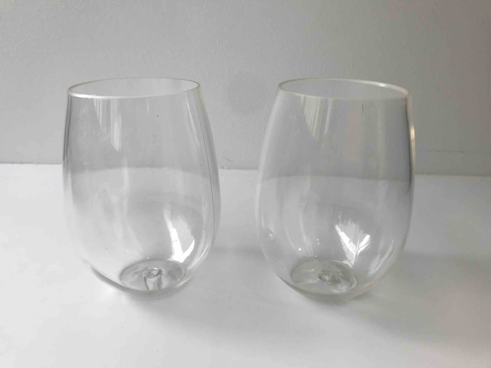

<!DOCTYPE html>
<html>
  <head>
    <title> Polysemy Experiment </title>

    <script src="jspsych-6.1.0/jspsych.js"></script>
    <script src="jspsych-6.1.0/plugins/jspsych-html-keyboard-response.js">
      </script>
    <script src="jspsych-6.1.0/plugins/jspsych-image-keyboard-response.js">
      </script>
    <script src="jspsych-6.1.0/plugins/jspsych-audio-button-response.js">
      </script>
    <script src="jspsych-6.1.0/plugins/jspsych-fullscreen.js">
      </script>
    <link href="jspsych-6.1.0/css/jspsych.css" rel="stylesheet" type="text/css">
      </link>

    <style>
      .grid-container {
        display: grid;
        grid-template-columns: 2
        grid-template-rows: 1
        grid-gap: 100px;
      }

      .grid-container > div {
        text-align: center;
      }

    </style>
  </head>

  <body>
  </body>

  <script>

  // timeline array
  var timeline = [];

  // launch fullscreen mode
  // note: this plugin will NOT work for Safari
  timeline.push({
    type: 'fullscreen',
    fullscreen_mode: true
  });

  // welcome page
  var welcome = {
    type: 'html-keyboard-response',
    stimulus: 'Welcome to this experiment! Press the space bar to continue.'
  };
  timeline.push(welcome);

  // prototype image trial
  var imagetrial = {
      type: 'image-keyboard-response',
      stimulus: 'stimuli/glassesA.jpg'
  };
  timeline.push(imagetrial);

  // html for 2 vs. 4 trial
  var twostim = '<div class="grid-container"><div></div></div>'
  var fourstim = '<div class="grid-container"><div></div><div></div></div>'

  // prototype audio button trial
  var audiotrial = {
      type: 'audio-button-response',
      stimulus: 'stimuli/glassesrecording-whichis.mp3',
      choices: ['stimuli/glassesA.jpg',
                'stimuli/glassesA.jpg'],
      button_html: twostim
  };
  timeline.push(audiotrial);

  /*
  // code for pre-test trials (sample without replacement or randomize)
  var pretest = {
      timeline: [
          {stimulus: 'image1.png'},
          {stimulus: 'image2.png'},
          {stimulus: 'image3.png'}
      ]
  };
  */

  // initialize
  jsPsych.init({
    timeline: timeline,
    // default intertrial interval (ms)
    default_iti: 100,
    // maximum experiment width
    experiment_width: 750,
    // for loading audio through HTML5 when running experiment locally
    use_webaudio: false,
    // excludes browsers that do not have access to WebAudio API
    exclusions: {
      audio: true
    }
  });

  </script>

</html>
